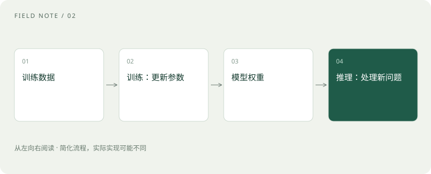

先读哪些知识
先用一个类比理解
训练像学做菜，推理像按已经学到的本领做一顿饭。给厨师一张当日订单，不等于重新培训厨师。
类比只帮助建立直觉，不等同于技术的完整机制。
一图看懂

预训练：形成广泛能力
预训练通常在大量数据上优化预测目标，让模型学到语言和模式。参数是优化过程中调整的数值，权重文件保存这些数值。数据来源、目标和质量都会影响结果。
后训练与微调：调整行为
在预训练后，模型可通过指令样本、偏好数据或其他训练方式改进行为。微调是继续更新模型参数的一类做法；LoRA 则是常见的参数高效方法，不必把所有参数都训练一遍。
推理：输入进去，结果出来
用户提问、模型生成回答，通常属于推理。对话历史一般通过上下文传入，并不自动写入权重。服务是否保存记录、是否用于后续训练，是另外的数据政策问题。
放进真实场景
SCENARIO
你在聊天里要求“以后用表格回答”，应用可以在后续请求中附上这条偏好；这与训练一个总爱用表格的模型不同。
别踩这个误区
不要把“模型看过我上传的文件”理解成“所有用户今后都能从模型里读到这些文件”。仍应按服务数据政策处理敏感信息。
想一想
给模型追加一份参考材料，通常属于训练吗？
通常不是，而是推理时提供上下文。
关联阅读
资料与边界
本文为原创知识讲解。类比和图示经过简化；示例数字不代表实测或报价。整理日期：2026-11-04。文末列出对应技术的原始资料，具体功能与版本支持请以原文为准。